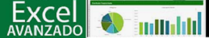

☰
☰
Excel Básico
Estudia Excel la mejor Hoja de Calculo
Temario del curso.
- INTRODUCCIÓN AL CURSO DE EXCEL BÁSICO
- 1.Concepto de hoja de cálculo
- 2.Estructura básica de una hoja de cálculo
- 3.Libros y hojas
- 4.Celdas, filas, columnas y rangos
- 5.Mover el puntero
- 6.Seleccionar varias celdas
- 7.Introducir texto y números en una celda
- 8.Formato de celda
- 9.Ajustar ancho y alto de columnas y filas
- 10.Insertar y eliminar filas y columnas
- 11.Insertar y eliminar celdas
- 12.Seleccionar rangos no adyacentes
- 13.Mover y copiar los contenidos de las celdas
- 14.Ordenar celdas
- 15.Combinar celdas
- AUTOFORMATOS Y ESTILOS
- 1.Autoformatos y estilos
- 2.Crear estilo Modificar y eliminar estilos.
- 3.Seleccionar hojas de cálcul
- 4.Manejar hojas de cálculo agrupadas
- 5.Copiar y mover hojas de cálculo
- USAR FORMULAS EN EXCEL.
- 1.Crear fórmulas - Barra de fórmulas
- 2.Mostrar fórmulas en una hoja de trabajo
...........................
25 horas
Costo del curso: $130.000
Leer mas..Excel Avanzado
Avanza mas con Excel
Temario del curso.
- FÓRMULAS
- 1.Manejo de Fórmulas Bísicas priorizadas
- 2.Generación de matrices de resultados con Fórmulas Matriciales
- 3.Optimización de resultados con Fórmulas 3D
- FUNCIONES
- 1.Seleccionar varias celdas
- 2.Localización de valores en bases de datos con función BuscarV
- 3.Aplicación de condiciones y resultados múltiples con función S
- 4.Localización de valores en bases de datos con función índice
- 5.Generación y uso de la función Subtotales
- 6.Uso de la función Elegir y Transponer
- FORMATO CONDICIONAL
- 1.Aplicación de formatos con detección de Reglas de datos
- 2.Formato condicionado por los valores en rangos con Barras de Datos
- 3.Escalas de Color y Conjunto de Iconos Generación y uso de la función Subtotales
- 4.Formato condicionado al cumplimiento de Fórmulas
- HERRAMIENTAS DE DATOS
- 6.Validación de los datos permitidos en un rango, mediante regla
- 7.Eliminación de valores duplicados en bases de datos
- 8.Cálculo de celdas con un objetivo espec?fico, modificando autométicamente otras celdas
- CONTROLES DE FORMULARIO
- 1.Crear Listas y Listas Desplegables basadas en rangos de datos
- 2.Activación de opciones para cálculos diversos con Casilla de Verificación, Botones de opción y Controles de Número
...........................
25 horas
Costo del curso: $130.000
Leer mas..Informática Básica
Aprende Informatica desde cero !Animate!
Temario del curso.
- INTRODUCCIÓN A LA COMPUTACIÓN
- 1.Aspectos generales de la informética
- 2.Tipos de computadoras
- HARDWARE
- 1.Conocimiento de dispositivos
- 2.Dispositivos de entrada
- 3.Dispositivos de salida
- 4.Dispositivos de almacenamiento
- SOFTWARE
- 1.Sistemas operativos
- 2.Dos
- 3.Android; Mac
- WINDOWS
- 1.Partes de Windows
- 2.Pantalla principal de Windows (escritorio)
- 3.Funciones característica
- 4.Barra de tareas
- 5.Abrir, cerrar y cambiar entre aplicaciones
- 6.Abrir, cerrar y cambiar entre aplicaciones
- ORGANIZACIÓN DE ARCHIVOS
- 1.Estructura de disco
- 2.Estructura de carpetas
- 3.Tipos de archivos
- 4.Administración de archivos y carpetas
- 5.Wordpad;Paint;Calculadora;
- INTERNET
- 1.Explorador
- INTRODUCCION A LAS APLICACIONES
- 1.Creación de una hoja de cálculo en Excel
- 2.Creación de un documento en Word
- 3.Creación de elementos gráficos en PowerPoint
...........................
25 horas
Costo del curso: $130.000
Leer mas..Curso página web HTML-CSS
Aprende a crear tus páginas web
Temario del curso.
- Diseño Web
- 1.Manejo de Fórmulas Bísicas priorizadas
- 2.Generación de matrices de resultados con Fórmulas Matriciales
- 3.Optimización de resultados con Fórmulas 3D
- FUNCIONES
- 1.Seleccionar varias celdas
- 2.Localización de valores en bases de datos con función BuscarV
- 3.Aplicación de condiciones y resultados múltiples con función S
- 4.Localización de valores en bases de datos con función índice
- 5.Generación y uso de la función Subtotales
- 6.Uso de la función Elegir y Transponer
- FORMATO CONDICIONAL
- 1.Aplicación de formatos con detección de Reglas de datos
- 2.Formato condicionado por los valores en rangos con Barras de Datos
- 3.Escalas de Color y Conjunto de Iconos Generación y uso de la función Subtotales
- 4.Formato condicionado al cumplimiento de Fórmulas
- HERRAMIENTAS DE DATOS
- 6.Validación de los datos permitidos en un rango, mediante regla
- 7.Eliminación de valores duplicados en bases de datos
- 8.Cálculo de celdas con un objetivo espec?fico, modificando autométicamente otras celdas
- CONTROLES DE FORMULARIO
- 1.Crear Listas y Listas Desplegables basadas en rangos de datos
- 2.Activación de opciones para cálculos diversos con Casilla de Verificación, Botones de opción y Controles de Número